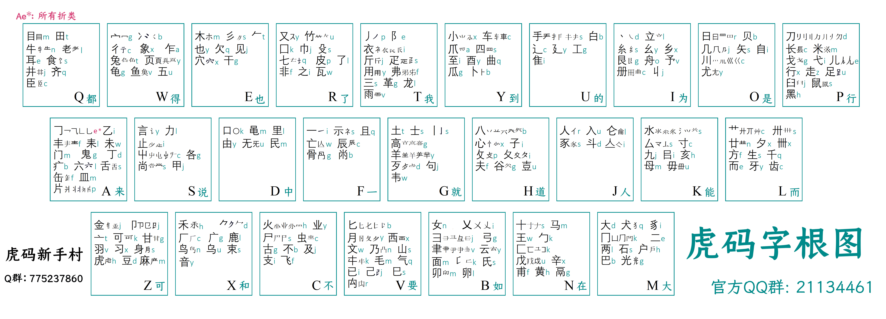
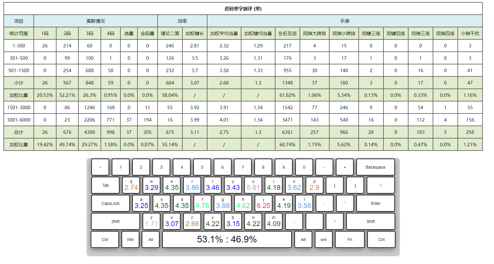
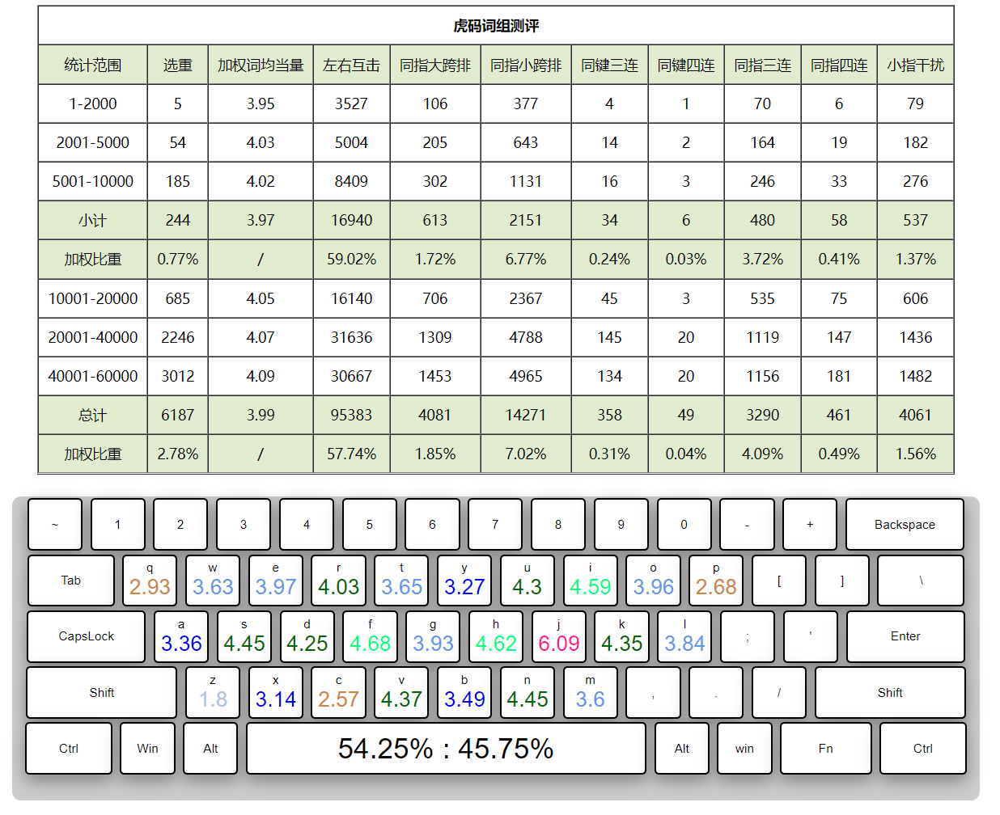

虎码方案全新的26键四码定长形码方案。四码方案是最常见的形码方案，对于不愿折腾的用户，可轻松挂接在搜狗、百度这类大厂输入法上。
字根双编码：主码乱序排列；小码采用音托。 同源字根归并后，一共有241个字根。 大部分形近字根位于同一按键，易记忆；字根大，拆分简单，并且重码低。
虎码的单字性能相当优秀，手感极佳，当量仅为1.3。前1500字，全码0重。前3000字，全码10个重码，出简后同样0重。前4000字，出简后仅1个重码，国标一级字无重。
虎码的词组重码率几乎与092五笔相等。远低于五笔86。同样的6万标准词库，双拼约1.8万组重码，五笔86、98、新世纪约1.3万组重码，而虎码约为6200组重码。其余信息可查看详细介绍。
-
轻松打字
大字根，易拆分，无识别码，顺畅的拆分取码速度。
-
大字集
能输入9万汉字，近期还将更新CJK-H扩展字集。
-
低重码
业界顶尖的字根排布算法，使得字根、取码尽量简单的同时，仍能保证常用字词低重码，高确定性地打词、打单，告别拼音的“你说我猜”，达到用遣词用字的自由。
-
舒适的手感
均衡的用指频率，较少的跨排、错手、连击等不良指法。
-
完善的词库
单字版、小词库版、简词版、百万超大词库版。
-
较高的打字速度
大部分用户加以正确的练习，可以轻松超过100字每分钟的速度，甚至已有超过200速的用户。
-
较低的学习成本
唯一的难点在于字根的掌握，而这个可以通过记忆软件解决。整体学习难度明显小于五笔。
-
活跃的社区
各行各业、各个年龄阶段的虎码用户。有打字高手，有资深程序员，有文字创作者，字典编篡人员……他们都在共同完善虎码。
- 1. 虎码针对常用单字高度优化： 前1500字全码无重。前3000字全码只有10组重码。前3000字出简后，只有1组重码。
- 2. 同源字根的变体归并为同一双编码：如人亻，水氵，火灬，心忄，示礻。
- 3. 形近字根，归并为同一主码：如广厂，已己巳，未耒，象兔龟鱼，艹廿卅卌，彐聿肀，卵卯。
- 4. 近义字根，归并为同一主码：如行走足，牙齿。
- 5. 低频字根，根据首部件，归并到高频字根上，以防因使用率过低而忘记：如鹿广，黾口。
- 6. 不成字的字根，归并到形近的成字字根上：如 𠂇, 十，癶八。
- 7. 字根的归并，不仅能减小记忆量，并且不必过于纠缠于字形、笔划细节，大幅减小使用时的思维负担。
作者中学接触电脑前，就用文曲星自学了五笔86以及BASIC语言，后来又自学了英文盲打，从此与键盘和代码结下不解之缘。
大学就读于上海交大，研究生期间专攻芯片软件的算法优化。
对中文输入法兴趣甚浓，长期浸泡在《五笔爱好者论坛》《北大中文论坛》等社区。
五笔86使用了十几年，想要更进一步。学习了五笔98、新世纪、牛码，觉得变化不大。于是放眼五笔体系之外，学习了双拼、山人全息码、郑码、真码……最终了解到了蓝宝石输入法——一个极少选重的高级形码。既然决心转码，何不转向最高级的形码。
加入蓝宝石Q群以后，发现群文件“形码设计师”。这是蓝宝石作者“秋风”写的软件，一个通过随机算法排布字根键位，以优化重码的软件。在秋风的指引下，开始进行乱序字根排布算法的研究，自此一发不可收拾。
我坚信，毫无方向的随机搜索算法，并不能带来质的突破，应该有更加“数学”的解法。一次泡澡过程中，灵光一闪，迫不及待地起身开电脑编写一通算法，其运行速度、以及优化结果大幅超越现有的随机算法。欣喜地向秋风分享了算法。
一个月后，秋风向我分享了对算法的改进思路。果然，技术是在分享与交流中不断进步。改进过后算法，在“乱序字根排布”这个小小的领域的顶峰，更上一层楼。
首先是完成“猫码”——双编字根三码定长字根方案。其GB字集全码重码组数为500组，这已经是三码方案能最到的顶尖的水平了（改进版的“鼠码”更是降到了470组）。 此单字重码性能已接近四码的小鹤音形，达到实用的级别了。
但因为“猫码”采用的是字根无理双编码，难度过高，难记，提速慢。用户短暂试用过后都放弃了。
于是又参照真码的思路，制作了span“健康码”，寓意是大家都健健康康，永远绿码。
健康码大码乱序，小码音托，学习难度小了很多。但纯单码长很长，取码分主副本，规则略复杂。
期间也改写算法，帮忙生成了新纪元、逸码。
期间还对山人全息码试着整键重排，改造成传统的四码定长字词方案，命名“天山输入法”，收获用户若干。
因为这类方案的模式传承自五笔，得到过长期的验证，接受度更高
但天山局限于字根按义归类到同键位，重码性能并不突出。并且需要补F、补回头码来保持单字简码的低重，有一定难度。词重码也不太尽人意。
一系列方案的制作中，作者渐渐明白，新时代的输入法方案，要提供给用户的核心价值是“易学、易用、高性能”。“易用”是其中的关键，其它两者都是服务于“易用”。
易学不等于易用，很多方案易学，但把成本转嫁到了后续的使用中，例如“音码易学，但重码高”，“某方案字根少，但拆分细碎”。
高性能也不等于易用，庞大的记忆量难维持，复杂的规则费脑。
作者决定制作一款全新的方案，抛弃天山的字根按义归类，而是字根全乱序排布。
因为字根已经乱序排布了，为了保证易用，它要有最直观的字根拆分，最简单的取码规则，字根小码还要采用音托来减少记忆量和学习难度。虽然这与高性能天然矛盾，但只要字根大码是乱序排布的，算法就有发挥的空间，力大砖飞。
唯一的难点，只剩字根的记忆了。但字根记忆的问题，已经被之前编写的字根记忆软件解决了，效果出奇的好。
方向确定后，命名为 “虎码” ——即“猫码”的升级版。
虎码的字根体系，参考了作者使用过、制作过的多个方案。这套字根，极其直观，保留了字源字义，同源形近字根作了的大规模归并，并且绝大部分都能单独成字，有读音，有字义。
此时的算法已完成了深度的进化——多线程、位运算的加持，使其运行速度有了数量级的提升——原来几小时完成的运算，现在只需要几十秒。
每添加、删除一个字根，都对结果进行了重算与评估。
确定了字根选取后，进行了连续三天的挂机运算。从上万个结果里挑出最好的几个，接力传统的退火算法，再挑出最好的那个。
虎码将字根设计经验，以及算法性能发挥到了极致。
一个打字爱好者、精通算法优化、热爱折腾各种输入法，又有幸遇到合适的领路人，触发了灵感，分享与交流算法，不断开发方案与积累经验……中间任何一环不按剧本走，这个世界线上都不会有虎码，这就是奇妙的缘分吧。
原本只想小范围使用，后来遇到了秃秃、浪子、小随风、小黑子 等人，他们极为热情地帮忙维护与推广虎码，用户群体不断壮大。因此你才读到了这篇文章，这又何尝不是一种缘份？